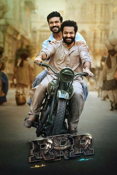
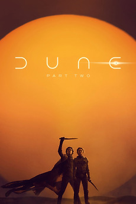
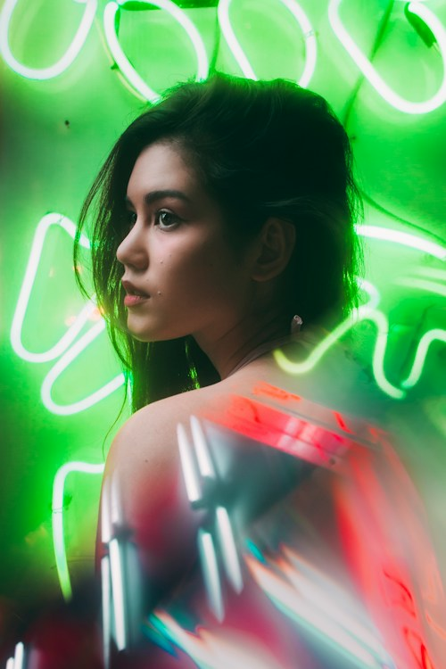

Make it yours.
Choose languages, genres, and a mood in Preferences. Keep your choices for this visit or remember them on this device.
A whole world of cinema. A little less scrolling.
Your next favourite is on the other side.


Your personal cinema companion. Tell us your mood and your language — we’ll hand you a film you’ll actually love, in seconds.

2020–2026 · Rated 4.0+ · Highest ratings first
Choose languages, genres, and a mood in Preferences. Keep your choices for this visit or remember them on this device.
Explore highly rated recent films, browse the full library, or tap Surprise me. Love a film to shape your recommendations.
Build a watchlist, mark what you’ve seen, and find your next favourite in For you.
Sign-in is a clearly labelled demo. Recommendations use film attributes and rating snapshots, not a prediction of your personal rating.
founder@ishuu.me